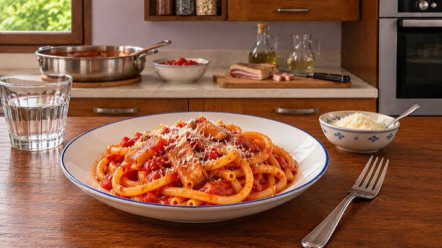

Home
Pasta Amatricana

Another favourite of mine. Can you tell I love Italian cuisine?
My suggestion would be to try a plate of pasta amatricana in Rome, with a view of the Pantheon, but for now the view of your kitchen will do.
Let's get it!
Ingridients
- Guanciale
- Onions
- Olive oil
- Garlic is optional
- Tomato sauce
- Pasta of your choice
- Pecorino romano
Steps
- Put the water to boil and add tons of salt to it
- Sautee the guanciale until it turns brown and set it aside
- In the same pan, sautee the onions and the garlic
- Add the tomato sauce and let it simmer for 20 minutes
- Add the boiled pasta to the sauce pan and give it a mix
- Add back the guanciale to the mix and top with pecorino romano
Enjoy!